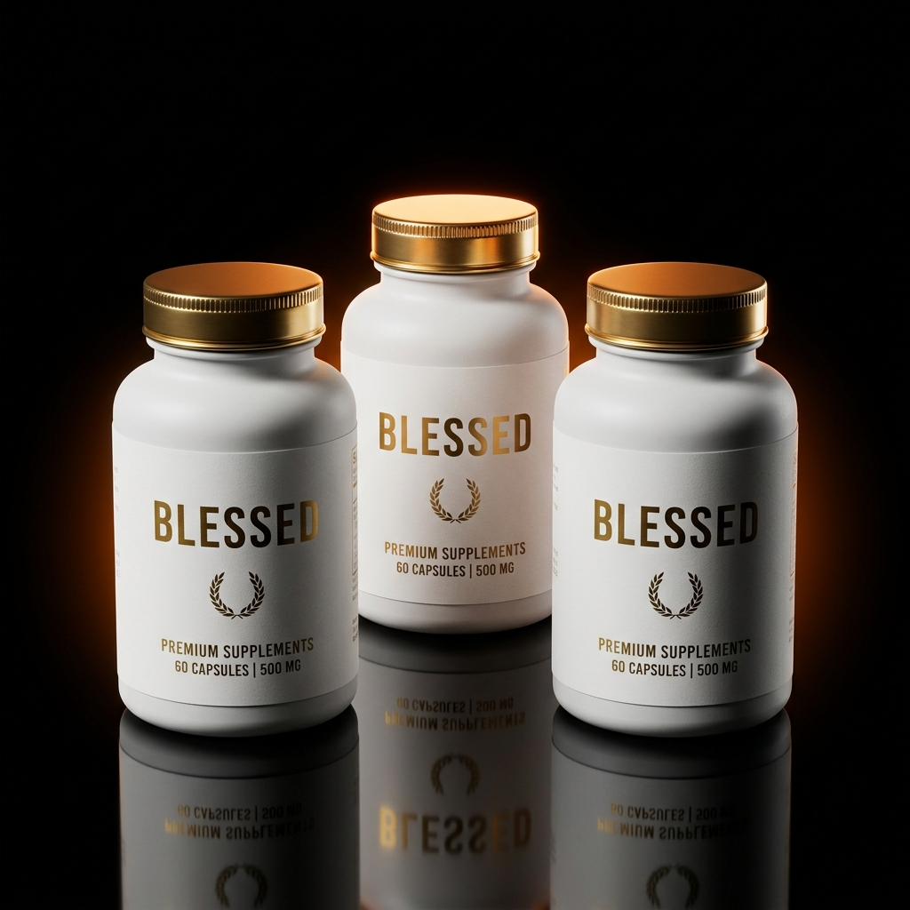

Acordar cansado mesmo após 8h de sono
Cortisol elevado durante a madrugada. Seu corpo dorme, mas o sistema nervoso não desliga. Resultado: você levanta exausto antes mesmo do dia começar.
73%dos brasileiros relatam isso
Você acorda cansado, depende de café pra funcionar e perde foco depois das 14h. Blessed reverte o ciclo de cortisol e dopamina em 14 dias — adaptógenos, nootrópicos e minerais quelados em uma única fórmula.

Cortisol elevado durante a madrugada. Seu corpo dorme, mas o sistema nervoso não desliga. Resultado: você levanta exausto antes mesmo do dia começar.
Glicemia desregulada pós-almoço. Foco evapora, produtividade cai pela metade.
Neuroinflamação crônica. Pensamentos lentos, memória curta, piloto automático.
Magnésio baixo + cortisol noturno. Você acorda 2-3 vezes sem perceber. Cansaço acumula.
Ashwagandha KSM-66 e Rhodiola Rosea atuam diretamente no eixo hipotálamo-pituitária-adrenal, regulando a curva diária de cortisol em 7 a 14 dias. Mente desinflama. O estresse volta a ser sinal, não ruído de fundo permanente.
Lion's Mane (Hericium erinaceus) estimula a produção de NGF (Nerve Growth Factor) e BDNF — fatores responsáveis pela manutenção e crescimento de neurônios. Foco volta. Memória clareia. Curva de aprendizado acelera.
Magnésio L-Treonato é a única forma de magnésio que atravessa a barreira hematoencefálica de forma significativa. Aumenta densidade sináptica durante o sono REM. Você dorme mais profundo. Recuperação cerebral real — não compensação por estimulante.
Sem fillers. Sem mascaramento. Cada ativo na concentração testada clinicamente — não na dose mínima legal.
Adaptógeno raiz. Ayurveda há 3.000 anos. Reduz cortisol até 27%.
600 mgCogumelo nootrópico. Estimula NGF e BDNF. Foco e neuroplasticidade.
500 mgAdaptógeno escandinavo. Resistência ao estresse. Energia sem pico.
300 mgÚnico Mg que cruza a barreira hematoencefálica. Sono profundo.
144 mgSinergia que direciona cálcio aos ossos. Imunidade e mood.
2.000 UIForma bisglicinato bioativa. Testosterona, imunidade e cognição.
15 mgMédias de 247 usuários após 90 dias de protocolo. Auto-relato + apps de tracking.
Cada kit foi desenhado em torno de um objetivo biológico distinto — não de margem.
Em 14 dias você nota energia mais estável e mente mais limpa. Para validar antes de comprometer um ciclo completo.
90 dias é o tempo que sua biologia precisa para resetar o eixo cortisol-dopamina e consolidar neuroplasticidade. É aqui que a mudança vira identidade.
Para quem já passou pelo protocolo de 90 dias e quer manter o estado base elevado. Maior economia por unidade.
Rafael M.
4 cafés/dia, queda total às 17h, irritação com a equipe.
1 café pela manhã, foco até 22h, segundo pote em curso. Não pretendo parar.
Ana C.
Insônia recorrente, mente acelerada o dia todo, café para não desabar.
Durmo 7h direto e acordo limpa. O sono mudou tudo — produtividade dobrou.
Diego L.
Recuperação ruim entre treinos, dor muscular acumulada, sono agitado.
Treino mais pesado, recuperação real, zero estimulante. PR no agachamento.
Não. A fórmula é 100% natural, sem estimulantes agressivos. Não causa dependência, insônia ou efeito rebote. Usa adaptógenos clinicamente validados em doses seguras.
Sim — e na verdade você provavelmente vai querer reduzir café gradualmente. Blessed regula a base bioquímica que faz você precisar de estimulantes. A maioria dos clientes corta para 1 café/dia em 30 dias.
Energia e foco: 7 a 14 dias. Sono profundo: 21 a 30 dias. Reset completo do eixo cortisol-dopamina: 90 dias — daí o protocolo de 3 potes ser o recomendado.
2 cápsulas pela manhã com um copo grande de água, idealmente em jejum ou antes do café. Cada pote tem 60 cápsulas (30 dias). Consistência diária é o que entrega o resultado.
Sim. Blessed é registrado e fabricado em laboratório certificado pela Anvisa, em conformidade com BPF (Boas Práticas de Fabricação). Cada lote é rastreável.
Sim, a fórmula é compatível com a maioria — ômega-3, creatina, multivitamínico. Em caso de medicação contínua ou condição clínica específica, vale alinhar com seu médico.
Pare de operar no piloto automático. 90 dias é tudo que separa quem você é hoje de quem você seria com cortisol regulado, foco contínuo e sono profundo.
Reverter agora →Garantia incondicional de 90 dias · Frete grátis · Pagamento em até 12x